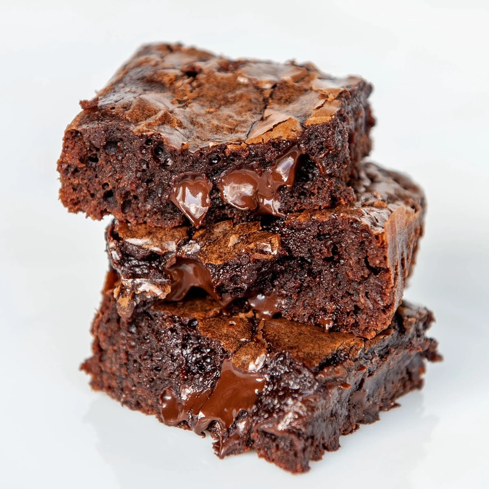

Simple Brownies

A chocolate brownie, or simply a brownie, is a chocolate baked confection. Brownies come in a variety of forms and may be either fudgy or cakey, depending on their density.
Ingredients
- 1/2 cup (115g) unsalted butter
- 1 cup (200g) granulated sugar
- 2 large eggs
- 1 teaspoon vanilla extract
- 1/3 cup (40g) unsweetened cocoa powder
- 1/2 cup (65g) all-purpose flour
- 1/4 teaspoon salt
- 1/4 teaspoon baking powder
Instructions
- Preheat your oven to 350°F (175°C). Grease a 9x9 inch baking pan.
- Melt the butter in a medium saucepan over low heat. Remove from heat and stir in sugar, eggs, and vanilla.
- Beat in cocoa, flour, salt, and baking powder. Spread batter into prepared pan.
- Bake in preheated oven for 20 to 25 minutes. Do not overcook; the brownies should be soft in the center.